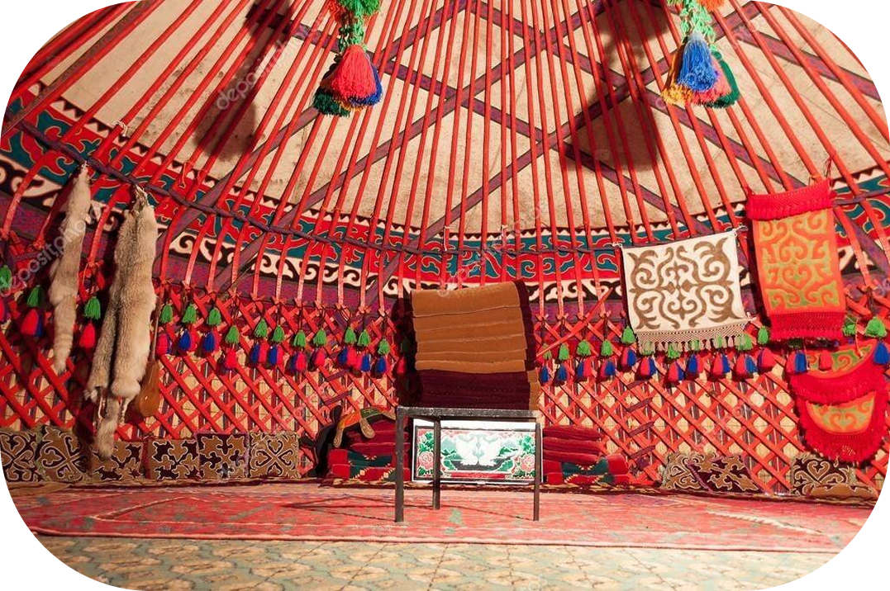
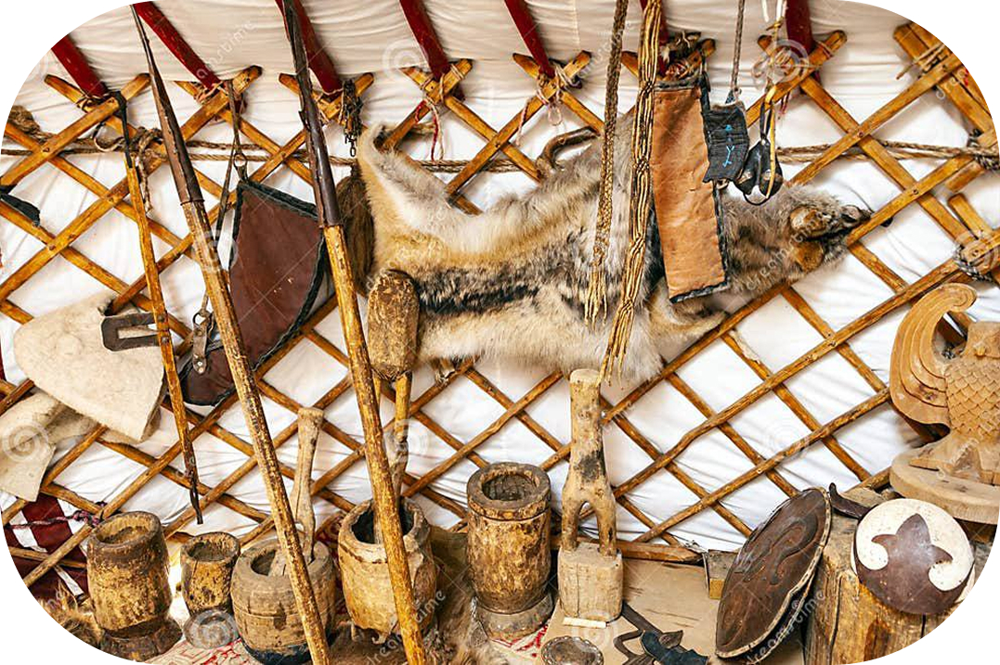

Боз үй
Боз үйлөр кыргыз маданиятынын эң маанилүү бөлүктөрүнүн бири жана жөн эле үй эмес. Алар үй-бүлөнү, жерди жана ааламды символдоштуруп, төрөлгөндөн өлгөнгө чейинки жашоонун бардык этаптарын камтыйт. Кыргыз маданиятынын басымдуу бөлүгү боз үйлөр менен байланышкан, маанилүү ырым-жырымдардан, кол өнөрчүлүккө жана салттуу кол өнөрчүлүккө чейин.
Боз үйгө окшош турак-жайлардын биринчи жолу байыркы кытай жылнаамаларында кездешет, алар талаадагы көчмөн элдер колдонгон көчмө кийиз үйлөрдү сүрөттөйт. Кылымдар бою боз үй үй-бүлөнүн борбору, катаал климаттык шарттардан коргоочу жана элдик кол өнөрчүлүктүн чагылышы болгон. Боз үй – көчмөн турмушта жашоого эң ылайыктуу, жыгачтан жана кийизден жасалган, бүктөлүүчү каркас турак жай. Кыргыз боз үйүнүн өзгөчөлүгү анын ойлонулган жасалгасында. Кыргыздын салттуу боз үйү бир да мыксыз тигилип, көчмөндөрдүн колунда болгон материалдар гана колдонулган.Боз үйдүн негизги каркасы жыгачтан, көбүнчө карагайдан же талдан жасалат, алар Борбордук Азиянын аймактарында кездешет.
Каркас төмөнкү элементтерден турат:
Кереге дубалдар үчүн тор сымал конструкция. Ал күчтүү, бирок ийкемдүү алкакты түзүү үчүн бири-бирине байланган жыгач таяктардан жасалган.
Уук – боз үйдүн чатырын көтөрүүчү жыгач устундар. Алар үстүнкү шакекчеге жана дубалдарга бекитилип, куполдун формасын түзөт.
Тундук - үстү жагында жайгашкан жана чатырды колдогон борбордук шакек. Ал күндүн символу болуп саналат жана ыйык деп эсептелет.

Түндүк - шыптын торчолору.
Үстүнө кийиз жабылган дөңгөлөктү элестеткен тундук боз үйдүн өзөгү болуп саналат. Ал аркылуу үйгө жарык жана таза аба кирип, мештен чыккан түтүн сыртка чыгат. Түндүк – асмандын, Ааламдын, үй-бүлө очогунун символу. Анын образы Кыргызстандын желегин кооздоп, эл үчүн маанисин баса белгилеген.
Кереге - бүктөлүүчү тор дубалдар.
Кереге музоо же төөнүн терисинен жасалган белдер менен бекемделген ийкемдүү рельефтерден жасалат. Кереге ийкемдүүлүгү жана бекемдиги менен боз үйгө туруктуулукту, жеңилдикти берет.
Ууки — кереге менен тундукту бириктирген устундар.
Ууктар боз үйдүн күмбөзүн түзүп, анын мүнөздүү формасын түзөт. Кызыгы, кыргыз боз үйүн Монголиядагы, Алтайдагы жана Тибеттеги окшош түзүлүштөрдөн айырмалап турган ууктун ийри формасы.
Эшик – боз үйдүн эшиги.
Боз үйдүн эшиги жыгачтан жасалып, сууктан сактануу үчүн кийиз менен жабылат. Кире бериш ар дайым чыгышты көздөй багытталган, ошондуктан күндүн биринчи нурлары үйдү жарык кылып, жаңы күндү жана жашоонун жаңылануусун билдирет.
Жеке элементтерди бекитүү үчүн боз үйдү периметри боюнча курчап турган жана анын жасалгасы катары кызмат кылган булгаарыдан токулган кайыштар да колдонулган.
Боз үйдүн дубалын жана чатырын жабуу үчүн көчмөндөр тандаган идеалдуу материал кийиз болгон. Төөнүн же койдун жүнүнөн кийиз же килем толот. Суукту да, ысыкты да өткөрбөйт, нымдуулуктан коркпойт, мите курттар көбөйбөйт. Полдору да толугу менен кийиз менен жабылган.
Кыргыз маданиятындагы боз үйдүн символу
Боз үйдүн ар бир деталында терең маани бар:
Тундук асман менен Ааламдын символу. Бул адам табияттын бир бөлүгү экенин эскертет. Кереге жана ууки үй-бүлө мүчөлөрү менен табияттын ортосундагы биримдикти жана гармонияны билдирет. Боз үйдүн тегерек формасы чексиздик жана теңдик философиясын чагылдырат – үйдө баары бирдей, ар кимдин өз орду бар. Анын үстүнө боз үй жөн эле турак жай эмес. Ал көчмөндөрдүн жашоосунда негизги ролду ойногон: ал жерде тойлор, ырым-жырымдар, үй-бүлөлүк чогулуштар сыяктуу салтанаттар өткөрүлгөн.
Боз үйдүн ички жасалгасы
Боз үйдүн ички жасалгасы кылымдар бою калыптанып, ушул күнгө чейин айрым буюмдарды жайгаштырууда жана бөлмөнүн айрым бөлүктөрүнүн арналышында чоң туруктуулук сакталып келет. Маселен, ушул күнгө чейин аял-эркек жарым, сый-урмат жана от жагып жаткан жерди айырмалоодо.
Боз үйлөр илгертеден келип чыккан чырак деп аталган чоюн же чопо чырак менен жарыктандырылчу. Лампа үчүн очоктун жанында жерге «чырак пая» деген жыгач стенд илинген. Керосин лампалары 20-кылымдын башында гана пайда боло баштаган.
Кире беришке каршы дубалдагы жер сыйлуу деп эсептелет. Алар аны “Төр” деп аташат. Бул жерде конокторду алдына дасторкон жайып тосуп алышат.
Бүгүн боз үй: Салт менен заманбаптын ортосунда
Бүгүнкү күндө кыргыз боз үйү кыргыз маданиятынын маанилүү бөлүгү бойдон калууда. Аны улуттук майрамдарда, фестивалдарда, этникалык иш-чараларда көрүүгө болот. Усталар эски технологияларды сактап, муундан-муунга өткөрүп, боз үйдү колго жасоону улантышууда.
2014-жылы кыргыз боз үйү ЮНЕСКОнун Адамзаттын материалдык эмес маданий мурастарынын репрезентативдик тизмесине киргизилип, анын уникалдуулугун жана дүйнөлүк маданият үчүн маанисин тастыктады. Заманбап архитекторлор экологиялык жактан таза жана функционалдык турак жайдын үлгүсү катары боз үйдөн шыктанышкан. Анын тегерек формасы жана табигый жарыктандыруу сыяктуу элементтери заманбап эко-үйлөрдү түзүүдө колдонулат.
Боз үй жөн эле үй эмес. Бул кыргыз элинин маданиятынын, каада-салтынын, философиясынын символу. Ал бизге жаратылыш менен гармонияны, тамырды сыйлоону жана үй-бүлө биримдигин эске салат. Боз үйдүн ар бир деталында ата-бабаларыбыздын акылмандыгы камтылган, алар азыркы заманга дем берип келет.